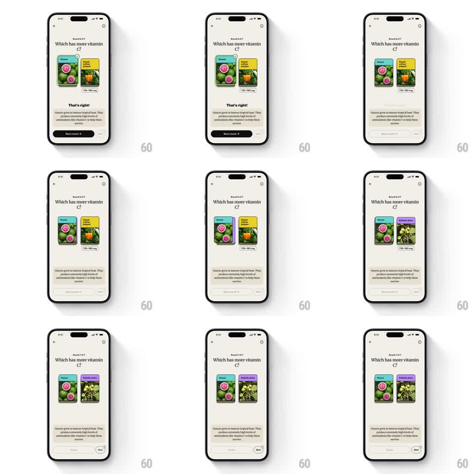

Media
Frame-by-frame

Rebuild this animation 1:1: Spark's quiz round transition - after a correct answer, tapping "Next round" slides the pair of answer cards off to the left while the next question's cards slide in from the right, with the round counter and question text crossfading in sync.

Rebuild this animation 1:1: Spark's quiz round transition - after a correct answer, tapping "Next round" slides the pair of answer cards off to the left while the next question's cards slide in from the right, with the round counter and question text crossfading in sync.
## Integration
Integration: stack-agnostic spec - springs given as stiffness/damping, timed motions as duration + curve; map every value to your framework and animation library of choice.
## Scene
Quiz screen on cream: "Round 6 of 7" eyebrow, question headline ("Which has more vitamin C?"), two answer cards side by side (image, name tag, value range), the "That's right!" verdict with explainer copy, and a dark "Next round" button.
## Motion spec
Pattern: horizontal card-slide between quiz rounds.
- On Next round: both answer cards slide left and out (translate -120%, 350ms, ease-in) as a pair, keeping their gap.
- The new pair slides in from the right (translate 120% -> 0, 350ms, ease-out) with a 50ms lag behind the exit so they never overlap.
- Question text and round counter crossfade during the card transit (200ms).
- The verdict block collapses (height -> 0, fade, 250ms) before the new cards arrive.
- The round counter ticks its number with a small vertical roll (old digit up, new digit in, 200ms).
## Calibration
- Exit and entrance share one continuous horizontal flow - like a carousel advancing, not two separate animations.
- Cards keep their exact size and spacing through the whole move.
## Reduced motion
Cards crossfade in place (200ms); counter changes without the roll.
## Don't miss
- The pair moves as one unit - no stagger between the two cards.
- The verdict must fully clear before new cards land, or the layout jumps.